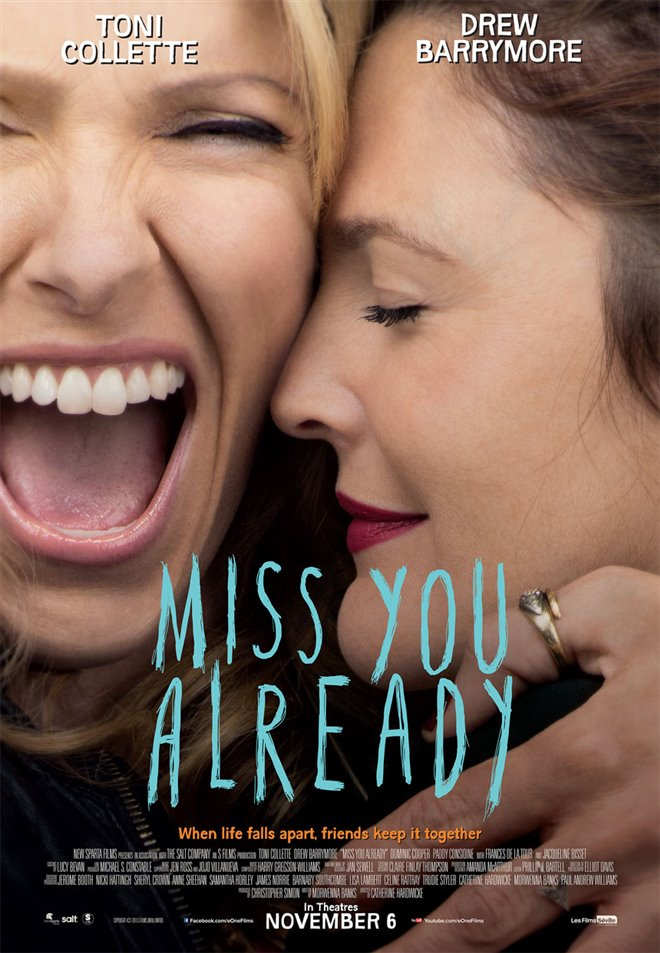

드라마
; 등장인물들의 행동이나 대화를 기본 수단으로 하여 표현하는 예술 작품.미스 유 올레디 (Miss You Already, 2015)

- 개봉일 : 2017.10.03
- 감독 : 캐서린 하드윅
- 각본 : 모웨나 뱅스
- 출연 : 드류 베리모어, 토니 콜렛, 도미닉 쿠퍼, 패디 콘시딘, 타이슨 리터, 멤 페더, 재클린 비셋, 자니스 아쿠아
- 줄거리 : 삶의 모든 순간을 함께한 단짝친구 '제스'와 '밀리'. 각자 사랑하는 사람과 행복하게 살고 있던 그때, 밀리의 건강에 이상이 생기기 시작한다.
나의 감상평 : 이 영화를 보면서 나의 단짝친구 옹심이가 많이 생각났다. 두 주인공에 나와 옹심이를 대입시켜서 우리라면 어땠을까?를 많이 생각하면서 봤다. 영화를 보는 내내 단짝친구를 생각하며 봤고, 단짝친구를 떠올리며 많이 울었다.
더 기버 (The Giver, 2014)

- 개봉일 : 2014.08.20
- 감독 : 필립 노이스
- 각본 : 마이클 미트닉, 로버트 B. 웨이드
- 출연 : 브렌튼 스웨이츠, 메릴 스트립, 제프 브리지스, 오데야 러쉬, 테일러 스위프트, 알렉산더 스카스가드, 케이티 홈즈, 카메론 모나한
- 줄거리 : 전쟁, 차별, 가난, 고통 없이 모두가 행복한 시스템 '커뮤니티'에서 다른 사람들과 똑같이 행복한 삶을 살던 '조너스'는 직위 수여식에서 '기억 보유자'의 임무를 부여 받는다. 조너스는 기억, 감정, 선택의 자유의 존재를 알게 되고, 위험한 선택을 하게 된다.
나의 감상평 : 나는 디스토피아 같은 특정 세계관이 확고한 영화를 좋아한다. 이 영화 줄거리를 보고 이거다! 하고 바로 감상했다. 영화 후반부에서 조너스의 선택으로 인해 모든 것이 바뀌는데, 관객인 나는 그 장면을 보고 굉장한 벅참과 황홀함, 그리고 충격을 받았다. 이 영화 덕분에 내가 감정을 느끼는 것이 당연한 것이 아니며, 감정을 느낄 수 있다는 것이 얼마나 멋진 일인지를 알게 되었다.